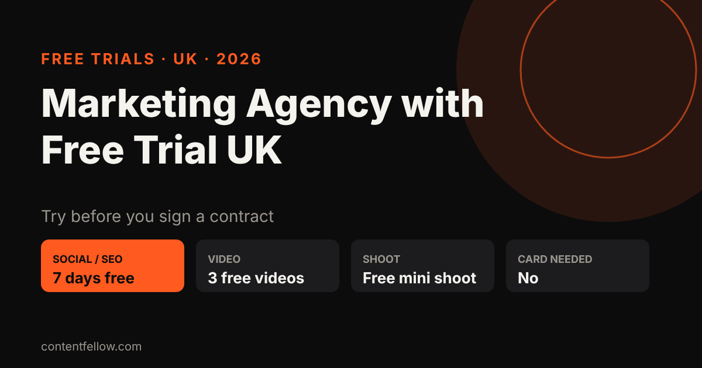
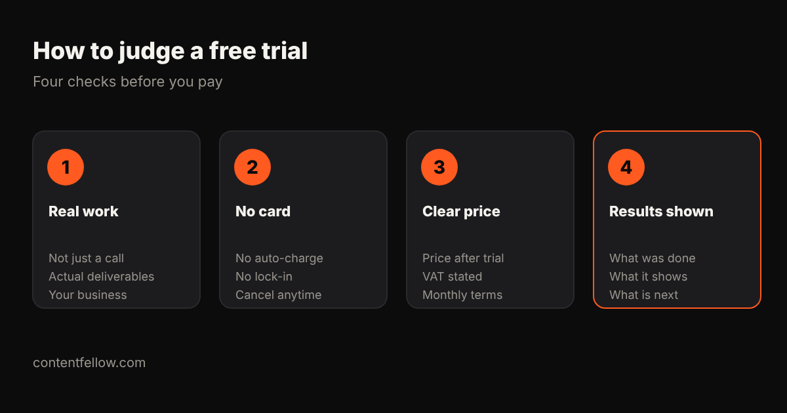

Marketing Agency with Free Trial UK: Who Offers One and What You Get (2026)
Marketing agency with free trial UK: who offers one?
Quick answer: Few UK marketing agencies offer a real free trial; most offer a free consultation or audit instead. ContentFellow offers a free trial on every plan with no card needed: 7 free days for Search, Social and Growth, 3 free videos for Creator, a free mini shoot for Studio, and a free homepage preview for Build. (Updated October 2026.)

TL;DR: A free audit tells you what is wrong. A free trial shows you how the agency actually works. Look for real deliverables, no card details and a clear monthly price afterwards.
Free trial vs free consultation vs free audit
| Offer | What you get | Common in the UK? |
|---|---|---|
| Free consultation | A call about your goals | Very common |
| Free audit | A report on your website, SEO or social | Common |
| Free trial | Real work delivered for your business | Rare |
ContentFellow free trials by plan
| Fellow | Monthly price | Free trial |
|---|---|---|
| Search Fellow (SEO + GEO) | £89/mo | 7 free days |
| Social Fellow | £59 or £129/mo | 7 free days |
| Growth Fellow (all five) | £389/mo | 7 free days |
| Creator Fellow (video editing) | £119/mo | 3 free videos |
| Studio Fellow (photo + video shoot) | £149/mo | Free mini shoot |
| Build Fellow (website) | £69/mo | Free homepage preview |
No card is needed to start. Billing is monthly with no long contract, and as we're not VAT registered the price shown is the price you pay. Start at get started.
Is there a free social media management trial in the UK?
Yes. The Social Fellow includes a 7-day free trial: we set up and manage up to 2 or 3 platforms (depending on plan) so you can see the posts, replies and tone before you pay anything.
How to judge any free trial

- Is it real work? Posts, videos, pages or a ranking report, not just a sales call.
- Card details? A trial that auto-charges is a sales tactic.
- What happens after? You should know the monthly price, VAT and notice period up front.
- What did it show? Ask for a short summary of what was done and what comes next.
See also marketing agencies with no long contract and social media management costs.
Frequently asked questions
Do any UK marketing agencies offer a free trial?
A few do. Most offer a free consultation or audit. ContentFellow offers a free trial on every plan with no card needed.
Is there a free social media management trial in the UK?
Yes. ContentFellow's Social Fellow comes with a 7-day free trial, then costs £59 or £129 a month.
Do I need a card for the free trial?
No. You can start any ContentFellow trial without card details.
What happens when the trial ends?
You choose whether to continue on the monthly price. There is no long contract and you can cancel from the next month.
Can I try SEO and GEO for free?
Yes. The Search Fellow (£89 a month) starts with 7 free days, and there is also a free AI visibility check.
See all services and prices → · More quick answers on our answers page. Want a site you own? See development packages and website care plans.
Sources: ContentFellow plans and prices from contentfellow.com/pricing/ (October 2026); UK market ranges are typical quotes from UK freelancer marketplaces and agency price pages checked October 2026. Last updated 19 October 2026.